Qtr1 Qtr2 Qtr3 Qtr4
2020 -2.34989610 0.20398232 0.99110138 0.34963453
2021 -0.84437305 0.16552933 1.69318121 -1.17590285
2022 -0.71032708 -0.02571098 -0.16064150 -2.22617693Semantic vectors for forecasting: mixtime
10th June 2026
Mitchell O’Hara-Wild, Monash University
Supervised by Rob Hyndman and George Athanasopolous


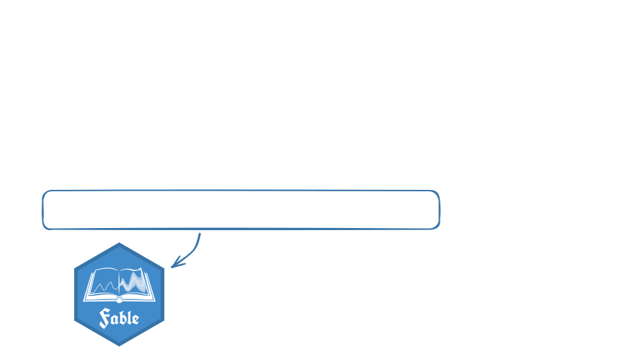
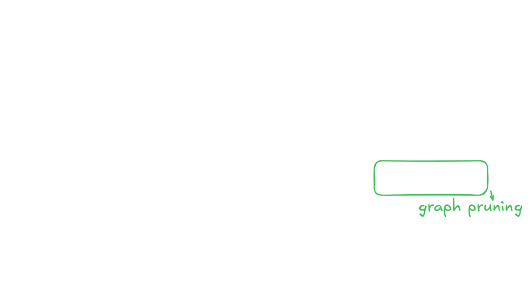
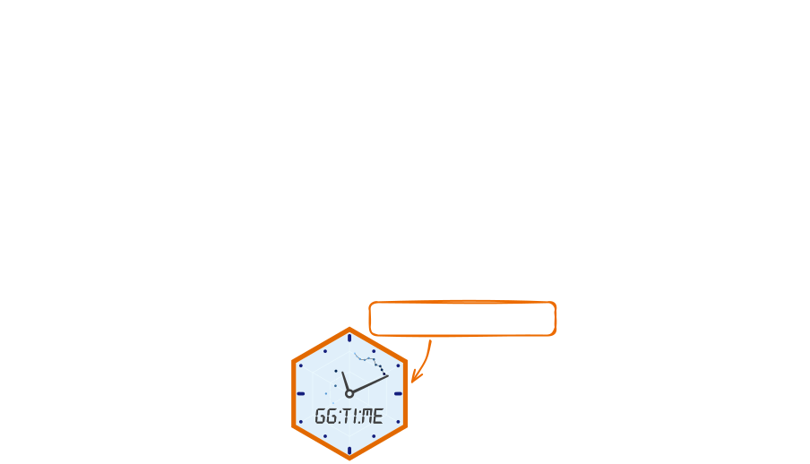
Not just reconciliation
- safer statistical manipulation
- time-series visualisation
- improved modelling of time
(e.g. holidays, seasonality in other calendars)
Time is tricky!
Time seems simple - continuous and ordinal.
In practice, time is complex - resulting in many different data structures to represent:
⏱️ Temporal granularities
🗺️ Time zones (and daylight savings time)
📅 Calendar systems (and time systems)
💽 Encodings (sequence, offset, component)
🕰️ Time model (continuous and discrete)
🔁 Time type (linear, cyclical, duration, …)
✍️ Time formatting (parse and deparse)
😵💫 and all combinations of the above!
How do we represent time?
(& what isn’t represented?)
Time is tricky!
Time seems simple - continuous and ordinal.
In practice, time is complex - resulting in many different data structures to represent:
⏱️ Temporal granularities
🗺️ Time zones (and daylight savings time)
📅 Calendar systems (and time systems)
💽 Encodings (sequence, offset, component)
🕰️ Time model (continuous and discrete)
🔁 Time type (linear, cyclical, duration, …)
✍️ Time formatting (parse and deparse)
😵💫 and all combinations of the above!
Calendar systems and algorithms
One of the most fascinating books I’ve read all year. Takes chronology into the computer age with impressive erudition and elan.
[…]
A must for everyone who worries about days, months, years – and why they never quite fit.
Ian Stewart
The goal of calcal is to do calendrical calculations, based on the algorithms described in Reingold and Dershowitz (2018) Calendrical Calculations: The Ultimate Edition.
Rob Hyndman
“But can we do better?”
Me 🤓
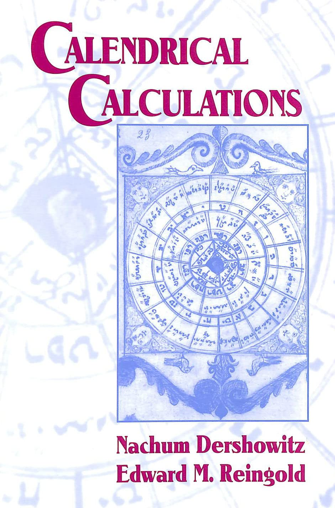
Encoding time as data
There are three main ways to store time.
- Time sequences (start, length, frequency)
- Time points (time units since an epoch)
- Time components (year, month, day, …)
R uses all three of these representations:
tsobjects are time sequencesPOSIXct/Dateobjects are time pointsPOSIXltobjects are time components
Time in R: ts
A ts object is very efficient (but limited).
Great for regular time series, with integer frequencies (e.g. months over years).
Time Series:
Start = 2020
End = 2020.02464065708
Frequency = 365.25
[1] -0.34794470 -0.23202732 1.15419455 -0.08053593 0.91049550 -0.34681044
[7] -0.40292544 0.71766081 -0.06419557 -0.92981255Terrible for irregular time series with non-integer frequencies (i.e. <= weekly in years).
Time in R: Date and POSIXct
Date and POSIXct objects are days and seconds since Unix epoch (1970-01-01).
[1] "1985-10-26"[1] "1985-10-26 01:35:00 PDT"Time stored in this way is space efficient, supports irregular time series, and can handle time zones.
Time in R: POSIXlt
POSIXlt objects are lists of time components (year, month of year, day of month, …).
[1] "1985-10-26 01:35:00 PDT"This data structure is very inefficient, but allows easy access to (and manipulation of) time components.
Time types, models, and systems
Time types
- Linear time is linear and unbounded (e.g. dates).
- Cyclical time repeats in cycles (e.g. day of week).
- Time durations are lengths of time (e.g. 3 months).
- … and many more (any ideas?).
Time models
- Discrete time models have indivisible chronons.
- Continuous time models allow fractional chronons.
Mapping discrete time to continuous time (or a more precise chronon) introduces temporal indeterminancy.
Time systems
- Civil time is based on local laws (time zones)
- Astronomical time is based on astronomy (sun, moon)
Time is NOT simple!
The mixtime package simplifies working with time.
| Aspect | ts |
Date |
POSIXct |
POSIXlt |
|---|---|---|---|---|
| Memory efficient | ✅ | ✅ | ✅ | ❌ |
| Compute cost | ✅ | ✅ | ✅ | ❌ |
| Irregular times | ❌ | ✅ | ✅ | ✅ |
| Time zones | ❌ | ❌ | ✅ | ✅ |
| Time types | ❌ | ❌ | ❌ | ❌ |
| Time models | ❌ | ❌ | ❌ | ❌ |
| Calendars | ❌ | ⚠️ | ⚠️ | ⚠️ |
| Granularity support | ✅ | ❌ | ❌ | ❌ |
| Mixed granularity | ❌ | ❌ | ❌ | ❌ |
(⚠️ Gregorian calendar only)
| Aspect | ts |
Date |
POSIXct |
POSIXlt |
mixtime |
|---|---|---|---|---|---|
| Memory efficient | ✅ | ✅ | ✅ | ❌ | ✅ |
| Compute cost | ✅ | ✅ | ✅ | ❌ | ✅ |
| Irregular times | ❌ | ✅ | ✅ | ✅ | ✅ |
| Time zones | ❌ | ❌ | ✅ | ✅ | ✅ |
| Time types | ❌ | ❌ | ❌ | ❌ | ✅ |
| Time models | ❌ | ❌ | ❌ | ❌ | ✅ |
| Calendars | ❌ | ⚠️ | ⚠️ | ⚠️ | ✅ |
| Granularity support | ✅ | ❌ | ❌ | ❌ | ✅ |
| Mixed granularity | ❌ | ❌ | ❌ | ❌ | ✅ |
(⚠️ Gregorian calendar only)
Why do we need mixtime?
Existing time objects use single granularities.
How do you represent monthly data in R?
It is common practice to use Date with the day of month 1.
"October 1985" → "1985-10-01"
What about quarterly data? What problems might arise?
We often need to mix time granularities together
- Temporal reconciliation
- Changing observation frequency
- Combining different data sources
While we’re here, let’s make it good!
- Consistent (including timezones for all!)
- Efficient (fast and small memory footprint)
- Multi-calendar (not just Gregorian)
- Extensible (endless business calendars exist)

Temporal theory and terminology
Terminology
- A time unit is a named unit of time (e.g. day, year).
- A time granule is a time unit and value (e.g. 2 weeks).
- A chronon is the finest granule of discrete time models.
- A cycle is a coarser granule that loops time chronons.
- A granularity is a partition of time by granules.
- A calendar is a system of time units and their relation.
Units, granules, & calendars
Calendars are sets of time units.
Time units are functions that make granules.
and granules are everything in mixtime.
⏱️ Time type granularities
🗺️ Time zones (and daylight savings time)
📅 Calendar systems (and time systems)
✍️ Time formatting (parse and deparse)
Chronons and time points
mixtime stores time as chronons since
an epoch (like Date & POSIXct).
In mixtime, the chronon can be any granule.
Granules galore
cal_gregorian$second(1L)for 1 secondcal_gregorian$minute(15L)for 15 minutescal_isoweek$week(2L,tz="Asia/Tokyo")
for a fortnight in Tokyocal_time_lunar$month(1L)for a lunar cyclecal_time_solar$day(1L,lat=-37.81,lon=144.96)for a solar day (midnight boundary) in Melbourne
Time types: linear_time()
Linear time vectors are created with linear_time() in reference to a chronon.
Time types: cyclical_time()
Cyclical time vectors are created with cyclical_time() in reference to a chronon.
<mixtime[1]>
[1] Oct PDTTime types: duration()
Duration vectors are created with duration() in reference to a chronon.
Time types: ivs::iv()
Time intervals are no different from
interval vectors - another type of semantic vector that is implemented in the ivs R package by Vaughan (2022).
<iv<mixtime>[1]>
[1] [1955-11-12 PST, 1985-10-26 PDT)ivs::iv() checks thart start < end. Cyclical time and durations can also be used.
Time models
Continuous time allows for fractional chronons, discrete time does not.
<mixtime[1]>
[1] 2026-04-17 41.3% AESTIntegers and doubles
All time types suport continuous & discrete time models.
Internally,
- discrete time is stored as integers (1 day =
1L) - continuous time is stored as doubles (50% of day =
0.5)
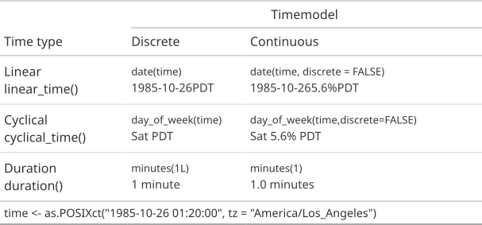
Manipulating time
Arithmetic can manipulate time.
<mixtime[1]>
[1] 10948.0 days<mixtime[1]>
[1] 1955-11-12 PSTSummary statistics can also be calculated.
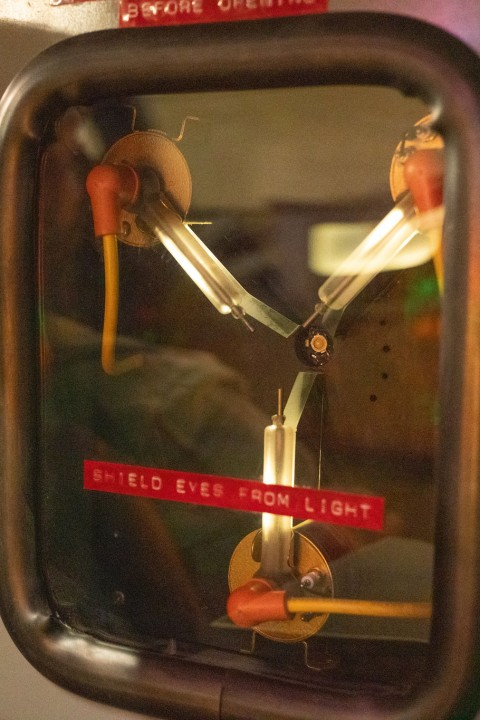
Rounding time
Time can be rounded to any granularity.
<mixtime[1]>
[1] 1985-11-01 PSTTime sequences
seq() makes sequences by durations.
Warning: The cycle offset (31 days) has produced time points that overflow the month
cycle.
! Using the nearest valid time points in the cycle, `on_invalid = "nearest"`
(the default).
ℹ Specify `on_invalid` explicitly to suppress this warning.<mixtime[6]>
[1] 2020-01-31 2020-02-29 2020-03-31 2020-04-30 2020-05-31 2020-06-30Invalid dates
Invalid dates can occur when adding irregular cycles to time points. mixtime detects these occurances.
(e.g. "2020-01-31" + 1 month → "2020-02-31").
Formatting time
Time is usually formatted with ‘strftime’.
strftime format codes
%Yfor year,%mfor month,%dfor day%Hfor hour,%Mfor minute,%Sfor second%zfor timezone offset,%Zfor timezone name
So we write: "%Y-%m-%d %H:%M:%S %Z"
to get: "1985-10-26 01:35:00 PDT".
How would I format an ISO-week date?
As in, YYYY-WW-D (e.g. 1985-W43-6).
%G for ISO year, %V for ISO week, %u for day of week (1-7)
So we write: "%G-W%V-%u" to get "1985-W43-6".
strftime issues
- Very cryptic format codes
- Format codes vary by operating system
- Locale-dependent output (e.g. month names)
- Limited to Gregorian and ISOweek calendars
Formatting time
mixtime uses glue-style format strings
with more descriptive format codes.
mixtime format codes
- Linear granules with
{lin(granule)} - Cyclical granules with
{cyc(granule, cycle)}
Where granule and cycle are:
- time units (e.g.
month), or - time granules (e.g.
month(1L)).
The calendar is inherited from the object, but can be explicitly specified with cal_gregorian$month(1L).
This also enables mixed-calendar format strings.
Formatting time
Each chronon has a default format string.
Custom format strings can be used, e.g.
and yes, mixtime mixes time systems 🎉
📅 Mixed granularities (and calendars)
Application - Australian CPI
Last year, the ABS started reporting CPI monthly instead of quarterly.
Monthly records only go back to April 2024, while quarterly records start in Q3 1948.
🦸 Mixed granularity vectors
With mixtime, these two data sets can be combined.
# A tibble: 311 × 2
Time CPI
<mixtime> <dbl>
1 1948 Q3 2.59
2 1948 Q4 2.63
3 1949 Q1 2.71
4 1949 Q2 2.74
5 1949 Q3 2.82
6 1949 Q4 2.86
7 1950 Q1 2.9
8 1950 Q2 3.02
9 1950 Q3 3.05
10 1950 Q4 3.17
# ℹ 301 more rows# A tibble: 25 × 2
Time CPI
<mixtime> <dbl>
1 2024 Apr 96.4
2 2024 May 96.2
3 2024 Jun 96.5
4 2024 Jul 96.8
5 2024 Aug 96.5
6 2024 Sep 96.5
7 2024 Oct 96.3
8 2024 Nov 96.7
9 2024 Dec 97.3
10 2025 Jan 97.6
# ℹ 15 more rowsApplication - Aggregation
tsibble::aggregate_index()
aggregates time to coarser granularities.
# A tsibble: 24,320 x 5 [1Q]
# Key: Region, State, Purpose [304]
Quarter Region State Purpose Trips
<qtr> <chr> <chr> <chr> <dbl>
1 1998 Q1 Adelaide South Australia Business 135.
2 1998 Q2 Adelaide South Australia Business 110.
3 1998 Q3 Adelaide South Australia Business 166.
4 1998 Q4 Adelaide South Australia Business 127.
5 1999 Q1 Adelaide South Australia Business 137.
6 1999 Q2 Adelaide South Australia Business 200.
7 1999 Q3 Adelaide South Australia Business 169.
8 1999 Q4 Adelaide South Australia Business 134.
9 2000 Q1 Adelaide South Australia Business 154.
10 2000 Q2 Adelaide South Australia Business 169.
# ℹ 24,310 more rows# A tsibble: 30,400 x 6 [1Q, 1Y]
# Key: Region, State, Purpose, .granule [608]
Quarter Region State Purpose .granule Trips
<mixtime> <chr> <chr> <chr> <mixtime> <dbl>
1 1998 Q1 Adelaide South Australia Business 1 quarter 135.
2 1998 Q1 Adelaide South Australia Holiday 1 quarter 224.
3 1998 Q1 Adelaide South Australia Other 1 quarter 58.4
4 1998 Q1 Adelaide South Australia Visiting 1 quarter 242.
5 1998 Q1 Adelaide Hills South Australia Business 1 quarter 0
6 1998 Q1 Adelaide Hills South Australia Holiday 1 quarter 6.81
7 1998 Q1 Adelaide Hills South Australia Other 1 quarter 0
8 1998 Q1 Adelaide Hills South Australia Visiting 1 quarter 2.99
9 1998 Q1 Alice Springs Northern Territory Business 1 quarter 7.54
10 1998 Q1 Alice Springs Northern Territory Holiday 1 quarter 8.15
# ℹ 30,390 more rowsApplication - Aggregation
Combined with aggregate_key(),
we can aggregate cross-temporally
# A tsibble: 42,500 x 6 [1Q, 1Y]
# Key: State, Purpose, Region, .granule [850] Quarter State Purpose Region .granule Trips
<mixtime> <chr*> <chr*> <chr*> <mixtime> <dbl>
1 1998 Q1 ACT Business Canberra 1 quarter 150.
2 1998 Q1 ACT Business <aggregated> 1 quarter 150.
3 1998 Q1 ACT Holiday Canberra 1 quarter 196.
4 1998 Q1 ACT Holiday <aggregated> 1 quarter 196.
5 1998 Q1 ACT Other Canberra 1 quarter 21.7
6 1998 Q1 ACT Other <aggregated> 1 quarter 21.7
7 1998 Q1 ACT Visiting Canberra 1 quarter 183.
8 1998 Q1 ACT Visiting <aggregated> 1 quarter 183.
9 1998 Q1 ACT <aggregated> Canberra 1 quarter 551.
10 1998 Q1 ACT <aggregated> <aggregated> 1 quarter 551.
# ℹ 42,490 more rowsTimezones and Astronomy
Two primitive time units implement timezone and astronomical properties.
Timezones and Astronomy
Calendars extend primitive time systems.
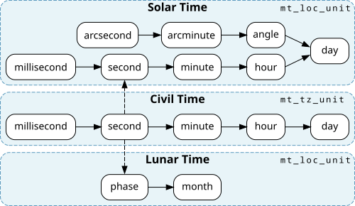
These primitives time units (mt_tz_unit and mt_loc_unit) provide time zone and location based calculations.
Calendrical Calculations
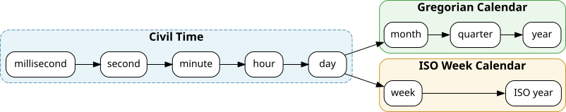
Time units define their cardinality between adjacent granules.
Irregular cardinalities (e.g. days in month) require a time point.
Adjacent units with irregular cardinality also require a divmod function for conversions.
Mixed granularity vectors

To enable mixed-type vectors in R,
I’ve created vecvec - vectors of vectors.
<vecvec[29]>
[1] Jan Feb Mar Apr May Jun
[7] Jul Aug Sep Oct Nov Dec
[13] -1.34381553 -0.97985362 -0.94409799 1.17574635 -0.54207786 0.67782851
[19] 0.76252293 0.67420766 0.07180535 -0.17553644 Inf+0i Inf+0i
[25] Inf+0i 1+0i 0+0i 0+0i 0+0i Outside of semantic vectors, vecvec is a bad idea for data analysis - it’s like Excel but for R.
Mixed granularity vectors
A mixtime is a mixed-type time vector.


Time for ggplot2

Two types of ggtime functions:
🖼️ Plot helpers
Functions which are used to quickly create a specific plot.
autoplot()/autolayer()ggtime::gg_season()ggtime::gg_subseries()
🎨 Grammar extensions
Functions which add new features to the ggplot2’s grammar.
ggtime::geom_time_line()ggtime::scale_x_mixtime()ggtime::coord_loop()
Geometries
geom_time_line()A time-aware version of
geom_line(). Shows timezone offsets with dashed lines from the[x/y]_time_offsetaesthetic.Code
library(dplyr) library(ggdist) library(ggtime) library(lubridate) # TODO - remove library(ggplot2) tz_shift <- as_tibble(tsibbledata::gafa_stock) |> filter( (Symbol == "AAPL" & Date <= "2014-01-15") | (Symbol == "GOOG" & Date <= "2014-01-13") ) |> mutate(Date = Sys.Date() + lubridate::hours(c(1:3, 3:9, 1:2, 4:9)), DST = ifelse(Symbol == "AAPL", "DST Ends", "DST Begins")) |> slice(1:3, 3:12, 12:n()) |> mutate( open = duplicated(Open), closed = c(open[-1], FALSE), Date = Date + open*3600*((DST=="DST Begins")*2-1) ) tz_shift |> ggplot(aes(x = Date, y = Close)) + geom_path(aes(group = cumsum(open))) + geom_path(linetype = "dashed", data = filter(tz_shift, open | closed)) + facet_wrap(vars(DST), ncol = 2, scales = "free_y") + scale_shape_manual(values = c("TRUE" = 16, "FALSE" = 1)) + guides(shape = "none")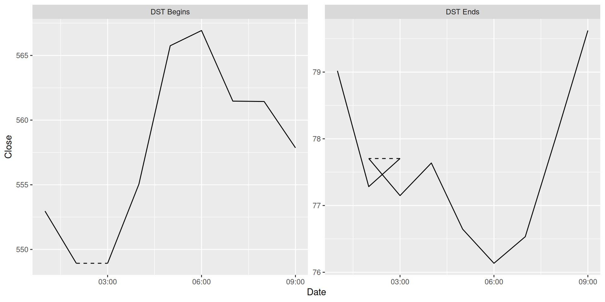
geom_time_candle()Shows value changes over time periods (e.g. daily, weekly, …) which are calculated using the
stat_candlestatistic.
Code
tsibbledata::gafa_stock |>
filter(Symbol == "GOOG") |>
filter(tsibble::yearmonth(Date) == tsibble::yearmonth("2014 Jun")) |>
ggplot(aes(x = Date)) +
tidyquant::geom_candlestick(
aes(open = Open, high = High, low = Low, close = Close),
colour_up = "#1FB974", fill_up = "#1FB974", colour_down = "#F4375D", fill_down = "#F4375D"
) +
scale_x_date(date_labels = "%d %b %Y") +
labs(y = "GOOG Stock")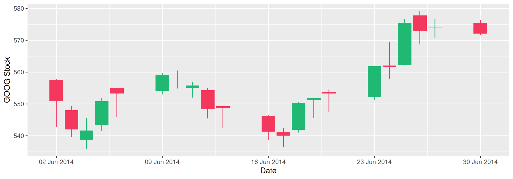
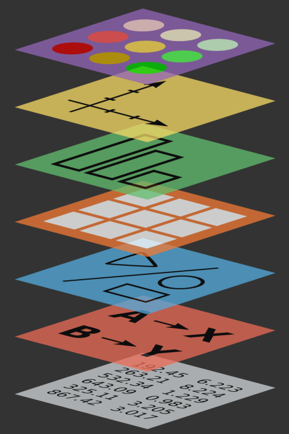
Positions [these are now in scale]
The x/y position of time is timezone adjusted:
position_time_absolute()positions time at its exact global location.Code
library(tsibble) pedestrian |> filter(Sensor == "Southern Cross Station") |> filter(lubridate::year(Date_Time) == 2015) |> mutate(Date_Time = force_tz(make_datetime(lubridate::year(Date), lubridate::month(Date), lubridate::day(Date), Time), "Australia/Melbourne")) |> ggplot(aes(x = Date_Time - as.POSIXct(Date), y = Count, group = Date)) + geom_line(alpha = 0.2) + theme(axis.text.x = element_blank()) + labs(x = "Time", title = "Hourly pedestrians passing Southern Cross Station")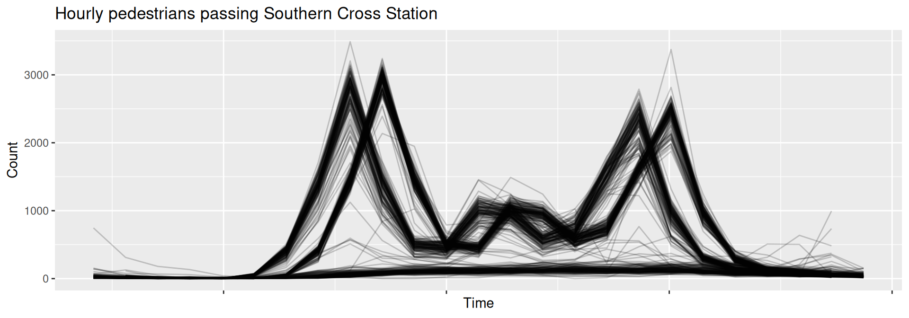
Timezone differences (e.g. daylight savings) misaligns seasonal patterns.
position_time_civil()positions time as it appears locally in each timezone.Code
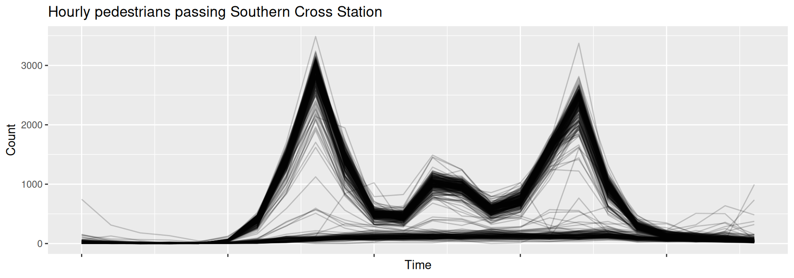
Scales
The scales in ggplot2 provide:
scale_*_date()forDate,scale_*_datetime()forPOSIXct,scale_*_time()forhms.
Extension packages (e.g. tsibble) add:
scale_*_yearquarter()foryearquarter,scale_*_yearmonth()foryearmonth,scale_*_yearweek()foryearweek.
Unified scales for time series
mixtime has many calendars and granularities.
ggtime unifies them all with scale_*_mixtime().
Scales
The mixtime scales support temporal labels and breaks, much like ggplot2:
time_labels(mixtime format strings)time_breaks(duration, e.g.months(3L))
These scales also have alignment options:
align_discrete(numeric, 0-1)time_warp(duration, e.g.months(1L))warp(times, e.g.2025-01-28)
Granularity alignment
{ggtime} aligns mixed granularities.
Imagine Australian births (annual) compared with total births by state (monthly).
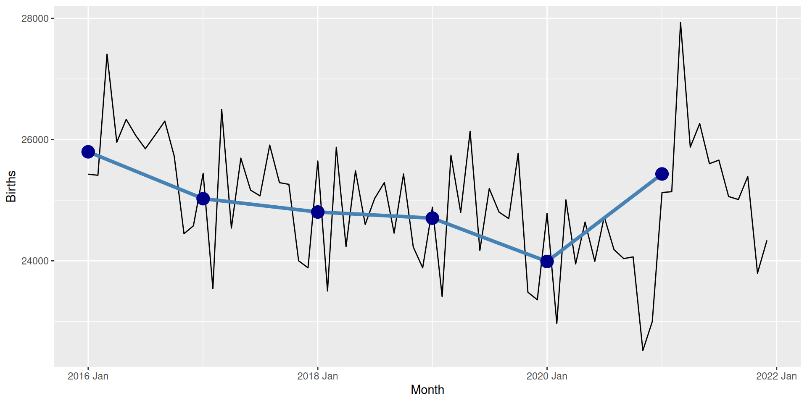
📅 Temporal alignment across granularities
When constrained to Date and POSIXct, left alignment is commonly used for less-frequent granularities.
e.g. 2025-01-01 can be 2025, Jan 2025, or Jan 1 2025.
Consequently, plotting is also often left-aligned.
Granularity alignment
{ggtime} center aligns granularities.
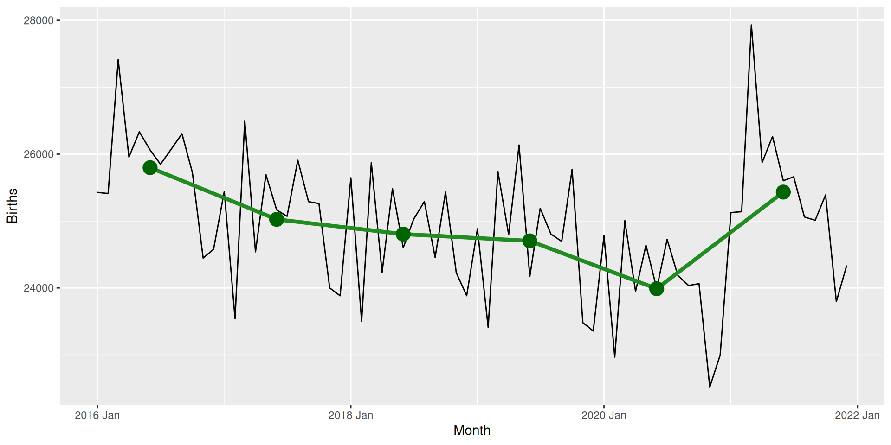
📅 Aligning temporal granularities
Specify alignment of different granularities with scale_x_mixtime(align_discrete = aes_nudge()).
Time warping
{ggtime} defaults to center alignment.
Cycles are repeating patterns with an irregular duration (and shape).
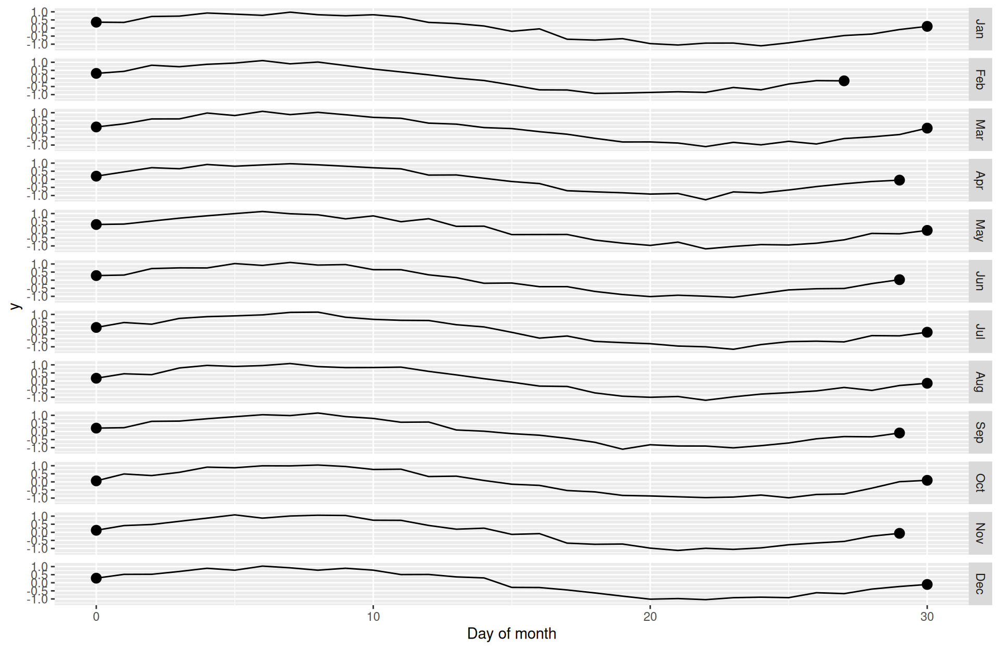
Warping cycles to have the same length as “% of cycle” can help compare cycle shapes.
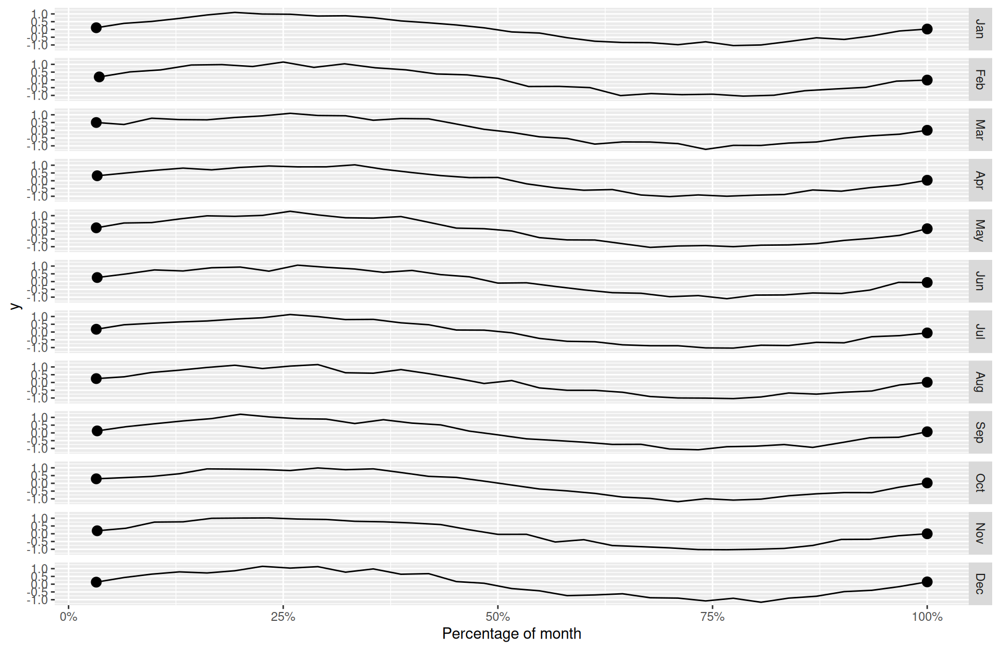
📅 Temporal alignment across cycles
In scale_x_mixtime(), warp time with
warp(stretch time between specific time points)time_warp(stretch time by duration, e.g."1 month")
Facets & Coordinates
Season plots loop time over seasonalities.
coord_loop()
The time loop points can be specified with:
loops(loop over specific time points)time_loops(over durations -weeks(1L))
Thanks for your time!
Final remarks
- Good design makes complicated things accessible.
- Statistical software with semantic vectors is safer.
- Try mixtime (and distributional)!

References
Aigner, Wolfgang, Silvia Miksch, Heidrun Schumann, and Christian Tominski. 2023. Visualization of Time-Oriented Data. Human–Computer Interaction Series. London: Springer London. https://doi.org/10.1007/978-1-4471-7527-8.
Vaughan, Davis. 2022. “Ivs: Interval Vectors.” Comprehensive R Archive Network. https://doi.org/10.32614/CRAN.package.ivs.